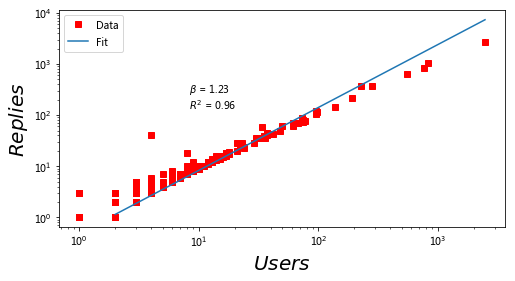
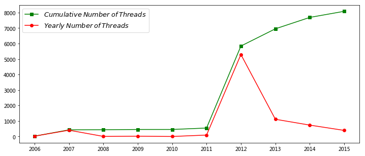

天涯论坛的回帖网络分析¶
%matplotlib inline
import matplotlib.pyplot as plt
dtt = []
file_path = '../data/tianya_bbs_threads_network.txt'
with open(file_path, 'r') as f:
for line in f:
pnum, link, time, author_id, author,\
content = line.replace('\n', '').split('\t')
dtt.append([pnum, link, time, author_id, author, content])
len(dtt)
8079
import pandas as pd
dt = pd.DataFrame(dtt)
dt=dt.rename(columns = {0:'page_num', 1:'link', 2:'time', 3:'author',4:'author_name', 5:'reply'})
dt[:5]
| page_num | link | time | author | author_name | reply | |
|---|---|---|---|---|---|---|
| 0 | 1 | /post-free-2849477-1.shtml | 2012-10-29 07:59:00 | 50499450 | 贾也 | 先生是一位真爷们！第161期导语：人人宁波，面朝大海，春暖花开! 宁波的事，怎谈？无从谈，... |
| 1 | 1 | /post-free-2849477-1.shtml | 2012-10-29 08:13:54 | 22122799 | 三平67 | 我们中国人都在一条船，颠簸已久，我们都想做宁波人，希望有一个风平浪静的港湾，面朝大海，春暖花... |
| 2 | 1 | /post-free-2849477-1.shtml | 2012-10-29 08:27:02 | 39027950 | 赶浪头 | 默默围观~ |
| 3 | 1 | /post-free-2849477-1.shtml | 2012-10-29 08:43:15 | 53986501 | m408833176 | 不能收藏？ |
| 4 | 1 | /post-free-2849477-1.shtml | 2012-10-29 08:55:52 | 39073643 | 兰质薰心 | 楼主好文！ 相信政府一定有能力解决好这些问题. |
# extract date from datetime
date = [i[:10] for i in dt.time]
dt['date'] = pd.to_datetime(date)
dt[:5]
| page_num | link | time | author | author_name | reply | date | |
|---|---|---|---|---|---|---|---|
| 0 | 1 | /post-free-2849477-1.shtml | 2012-10-29 07:59:00 | 50499450 | 贾也 | 先生是一位真爷们！第161期导语：人人宁波，面朝大海，春暖花开! 宁波的事，怎谈？无从谈，... | 2012-10-29 |
| 1 | 1 | /post-free-2849477-1.shtml | 2012-10-29 08:13:54 | 22122799 | 三平67 | 我们中国人都在一条船，颠簸已久，我们都想做宁波人，希望有一个风平浪静的港湾，面朝大海，春暖花... | 2012-10-29 |
| 2 | 1 | /post-free-2849477-1.shtml | 2012-10-29 08:27:02 | 39027950 | 赶浪头 | 默默围观~ | 2012-10-29 |
| 3 | 1 | /post-free-2849477-1.shtml | 2012-10-29 08:43:15 | 53986501 | m408833176 | 不能收藏？ | 2012-10-29 |
| 4 | 1 | /post-free-2849477-1.shtml | 2012-10-29 08:55:52 | 39073643 | 兰质薰心 | 楼主好文！ 相信政府一定有能力解决好这些问题. | 2012-10-29 |
import pandas as pd
df = pd.read_csv('../data/tianya_bbs_threads_list.txt', sep = "\t", header=None)
df=df.rename(columns = {0:'title', 1:'link', 2:'author',3:'author_page', 4:'click', 5:'reply', 6:'time'})
df[:2]
| title | link | author | author_page | click | reply | time | |
|---|---|---|---|---|---|---|---|
| 0 | 【民间语文第161期】宁波px启示:船进港湾人应上岸 | /post-free-2849477-1.shtml | 贾也 | http://www.tianya.cn/50499450 | 194675 | 2703 | 2012-10-29 07:59 |
| 1 | 宁波镇海PX项目引发群体上访 当地政府发布说明(转载) | /post-free-2839539-1.shtml | 无上卫士ABC | http://www.tianya.cn/74341835 | 88244 | 1041 | 2012-10-24 12:41 |
from collections import defaultdict
link_user_dict = defaultdict(list)
for i in range(len(dt)):
link_user_dict[dt.link[i]].append(dt.author[i])
df['user'] = [len(link_user_dict[l]) for l in df.link]
df[:2]
| title | link | author | author_page | click | reply | time | user | |
|---|---|---|---|---|---|---|---|---|
| 0 | 【民间语文第161期】宁波px启示:船进港湾人应上岸 | /post-free-2849477-1.shtml | 贾也 | http://www.tianya.cn/50499450 | 194675 | 2703 | 2012-10-29 07:59 | 2478 |
| 1 | 宁波镇海PX项目引发群体上访 当地政府发布说明(转载) | /post-free-2839539-1.shtml | 无上卫士ABC | http://www.tianya.cn/74341835 | 88244 | 1041 | 2012-10-24 12:41 | 830 |
import statsmodels.api as sm
import numpy as np
x = np.log(df.user+1)
y = np.log(df.reply+1)
xx = sm.add_constant(x, prepend=True)
res = sm.OLS(y,xx).fit()
constant,beta = res.params
r2 = res.rsquared
fig = plt.figure(figsize=(8, 4),facecolor='white')
plt.plot(df.user, df.reply, 'rs', label= 'Data')
plt.plot(np.exp(x), np.exp(constant + x*beta),"-", label = 'Fit')
plt.yscale('log');plt.xscale('log')
plt.xlabel(r'$Users$', fontsize = 20)
plt.ylabel(r'$Replies$', fontsize = 20)
plt.text(max(df.user)/300,max(df.reply)/20,
r'$\beta$ = ' + str(round(beta,2)) +'\n' + r'$R^2$ = ' + str(round(r2, 2)))
plt.legend(loc=2,fontsize=10, numpoints=1)
plt.axis('tight')
plt.show()

x = np.log(df.user+1)
y = np.log(df.click+1)
xx = sm.add_constant(x, prepend=True)
res = sm.OLS(y,xx).fit()
constant,beta = res.params
r2 = res.rsquared
fig = plt.figure(figsize=(8, 4),facecolor='white')
plt.plot(df.user, df.click, 'rs', label= 'Data')
plt.plot(np.exp(x), np.exp(constant + x*beta),"-", label = 'Fit')
plt.yscale('log');plt.xscale('log')
plt.xlabel(r'$Users$', fontsize = 20)
plt.ylabel(r'$Clicks$', fontsize = 20)
plt.text(max(df.user)/300,max(df.click)/20,
r'$\beta$ = ' + str(round(beta,2)) +'\n' + r'$R^2$ = ' + str(round(r2, 2)))
plt.legend(loc=2,fontsize=10, numpoints=1)
plt.axis('tight')
plt.show()

# convert str to datetime format
dt.time = pd.to_datetime(dt.time)
dt['month'] = dt.time.dt.month
dt['year'] = dt.time.dt.year
dt['day'] = dt.time.dt.day
type(dt.time[0])
pandas.tslib.Timestamp
d = dt.year.value_counts()
dd = pd.DataFrame(d)
dd = dd.sort_index(axis=0, ascending=True)
ds = dd.cumsum()
def getDate(dat):
dat_date_str = map(lambda x: str(x) +'-01-01', dat.index)
dat_date = pd.to_datetime(list(dat_date_str))
return dat_date
ds.date = getDate(ds)
dd.date = getDate(dd)
fig = plt.figure(figsize=(12,5))
plt.plot(ds.date, ds.year, 'g-s', label = '$Cumulative\: Number\:of\: Threads$')
plt.plot(dd.date, dd.year, 'r-o', label = '$Yearly\:Number\:of\:Threads$')
#plt.yscale('log')
plt.legend(loc=2,numpoints=1,fontsize=13)
plt.show()

提取评论信息¶
dt.reply[:55]
0 先生是一位真爷们！第161期导语：人人宁波，面朝大海，春暖花开! 宁波的事，怎谈？无从谈，...
1 我们中国人都在一条船，颠簸已久，我们都想做宁波人，希望有一个风平浪静的港湾，面朝大海，春暖花...
2 默默围观~
3 不能收藏？
4 楼主好文！ 相信政府一定有能力解决好这些问题.
5 人民在觉醒。
6 理性的文字，向楼主致敬！
7 呼唤变革,人民需要的是服务型政府！
8 顶贾兄！让我们携手努力保卫家园！
9 围观就是力量,顶起就有希望.
10 文章写得太有力量了，支持你！
11 @贾也 2012-10-29 7:59:00 导语：人人宁波，面朝大海，春暖花开 ......
12 中国人从文盲走向民粹，实在是太快了。
13 杀死娘胎里的，毒死已出生的，这个社会怎么了？
14 3
15 环境比什么都可贵，每一次呼吸，每一顿粮食，都息息相关，若任其恶化，而无从改观，那遑谈国家之未...
16 写的很好
17 未来这里将是全球最大的垃圾场，而他们早已放浪西方。苟活的将面临数不清的癌症，无助的死亡。悲哀...
18 媒体失声，高压维稳，只保留微博和论坛可以说这件事！因为那些人知道，网上的人和事就只能热几天，...
19 说的太好了，看的我泪流满面！
20 “我相信官场中，许多官员应该葆有社会正能量” 通篇好文，顶！唯这句，不说也罢....
21 先占一环，然后看帖
22 说的太好了
23 我上的小学，隔壁就是一家水泥厂，到处飞扬的水泥灰是我最熟悉的颜色;坐一站地车，就是一家造纸厂...
24 我们中国人都在一条船，颠簸已久，我们都想做宁波人，希望有一个风平浪静的港湾，面朝大海，春暖花开！
25 前排占座~~
26 贾也先生是一位真爷们！
27
28 为什么我的眼里常含着泪水?因为我对这片土地爱得深沉!
29 又是因为环保的群体事件，影响面大，危害严重，理由叫的响，取得阶段性胜利。 那些拆迁的、城管...
30 回复第20楼，@rual_f “我相信官场中，许多官员应该葆有社会正能量” 通篇好文，...
31 好文.
32 一环 天涯现在太滞后了，看消息还是得靠微博。太失望了。
33 刘明……
34 杂谈的低智商屌丝男们确定自己懂什么是px？
35 屁民的胜利
36 说的太好了
37 ．．．．． 。。。。
38 。。。。。。
39 宁波人民胜利了！
40 好文
41 不显示
42 含泪顶起~~~~~~~~
43 盲目决策， 然后群众反对， 再抓人， 政府出面承诺项目搁置， 再偷偷上马， 在各地轮回
44 好文頂一個先！希望我們的政府不要再置人民的利益于不顧！不要再行滅絕漢族子孫的政策！不要逼民眾...
45 每次看到这样的消息，都很痛心，很堵很堵。为什么在经济发展的同时，我的祖国却越来越残忍，越来越...
46 @兰质薰心 2012-10-29 08:55:52 楼主好文！ 相信政府一定有能力解决好...
47 记得以前有人说过 厦门 必将会成为一座里程碑 烛照万里 看来真的成了
48 贾也，真爷们， 一直爱在天涯逛逛，是因为这还多少能让人说话
49 帖子咋了，啥都看不到。
50 顶
51 顶,好文章
52 在宁波呆过几年，感觉还不错
53 @昊爷7 2012-10-29 11:19:29 杂谈的低智商屌丝男们确定自己懂什么是px...
54 什么时候变成了奴隶
Name: reply, dtype: object
@贾也2012-10-297:59:00 导语：人人宁波，面朝大海，春暖花开 ……..
@兰质薰心2012-10-2908:55:52 楼主好文！ 相信政府一定有能力解决好这些...
回复第20楼，@rual_f “我相信官场中，许多官员应该葆有社会正能量” 通篇好文，顶...
import re
tweet = u"//@lilei: dd //@Bob: cc//@Girl: dd//@魏武: \
利益所致 自然念念不忘// @诺什: 吸引优质 客户，摆脱屌丝男！！！//@MarkGreene: 转发微博"
RTpattern = r'''//?@(\w+)'''
for word in re.findall(RTpattern, tweet, re.UNICODE):
print(word)
lilei
Bob
Girl
魏武
MarkGreene
print(dt.reply[11])
@贾也 2012-10-29 7:59:00 导语：人人宁波，面朝大海，春暖花开 ........... ----------------------------- 顶贾兄！ 充分说明：莫言或诺贝尔，名至实归！
RTpattern = r'''@(\w+)\s'''
re.findall(RTpattern, dt.reply[11], re.UNICODE)
['贾也']
if re.findall(RTpattern, dt.reply[0], re.UNICODE):
print(True)
else:
print(False)
False
for k, tweet in enumerate(dt.reply[:100]):
# tweet = tweet.decode('utf8')
RTpattern = r'''@(\w+)\s'''
for person in re.findall(RTpattern, tweet, re.UNICODE):
print(k,'\t',dt.author_name[k],'\t', person,'\t\t', tweet[:30])
11 木兰清风_ 贾也 @贾也 2012-10-29 7:59:00 导语：人人宁
30 此东西非南北 rual_f 回复第20楼，@rual_f “我相信官场中，许多官员应该
46 弱水三千chen 兰质薰心 @兰质薰心 2012-10-29 08:55:52 楼主好
53 彼得与梦想 昊爷7 @昊爷7 2012-10-29 11:19:29 杂谈的低
66 lenglengjing 蒙上眼睛的牛 @蒙上眼睛的牛 2012-10-29 10:15:56 未
67 AGy戰女 天时怼兮威灵怒 @天时怼兮威灵怒 66楼 http://baike.ba
69 我真的要说吗 香湖人 @香湖人 27楼 -----------------
71 2011我为卿狂 shdsb @shdsb 2012-10-29 10:17:43 媒体
72 无色天空FRANK pals2009 @pals2009 48楼 每次看到这样的消息，都很痛心
76 gaolihshq 兰质薰心 作者：弱水三千chen 回复日期：2012-10-29 11
80 LBJStream 曾开贵 @曾开贵 2012-10-29 11:40:09 没有ZF
93 大头菜烤年糕 横冲节度使 @横冲节度使 2012-10-29 12:11:50 楼主
94 xinggzyyc 赶浪头 @赶浪头 2楼 默默围观~ -----------
print(dt.reply[80])
@曾开贵 2012-10-29 11:40:09 没有ZF，哪来新ZG，没有新ZG，你们吃什么？为什么你们总是要攻击ZF呢，就像之前那样骂骂小日本多好啊……看看台湾，一碗牛肉面竟然卖到100台币一碗，大L都才卖10元一碗，你还不知足！啥，工资不一样？没错，台湾平均工资5万台币能买500碗牛肉面，大L平均工资2000能买200碗牛肉面。但是，小同志，事情没这么简单啊，你能一下吃完500碗面吗？在倡导节约、环保低碳的今天，你不觉得铺张浪费是件可耻........... ----------------------------- 叼
link_author_dict = {}
for i in range(len(df)):
link_author_dict[df.link[i]] =df.author[i]
graph = []
for k, tweet in enumerate(dt.reply):
url = dt.link[k]
RTpattern = r'''@(\w+)\s'''
persons = re.findall(RTpattern, tweet, re.UNICODE)
if persons:
for person in persons:
graph.append([dt.author_name[k], person])
else:
graph.append( [dt.author_name[k], link_author_dict[url]] )
len(graph)
8769
for x, y in graph[:3]:
print(x, y)
贾也 贾也
三平67 贾也
赶浪头 贾也
import networkx as nx
G = nx.DiGraph()
for x,y in graph:
if x != y:
G.add_edge(x,y)
nx.info(G)
'Name: \nType: DiGraph\nNumber of nodes: 4289\nNumber of edges: 5995\nAverage in degree: 1.3978\nAverage out degree: 1.3978'
GU=G.to_undirected(reciprocal=True)
graphs = list(nx.connected_component_subgraphs(GU))
import numpy as np
size = []
for i in graphs:
size.append(len(i.nodes()))
len(size), np.max(size)
(4067, 120)
gs = []
for i in graphs:
if len(i.nodes()) >5:
gs.append(i)
len(gs)
4
for g in gs:
print(len(g.nodes()))
6
120
44
9
g_max = gs[1]
len(g_max.nodes())
120
pos = nx.spring_layout(g_max)
#定义一个布局，此处采用了spectral布局方式，后变还会介绍其它布局方式，注意图形上的区别
nx.draw(g_max,pos,with_labels=False,node_size = 30)
#绘制规则图的图形，with_labels决定节点是非带标签（编号）,node_size是节点的直径
plt.show() #显示图形

# with open('../data/tianya_network_120.csv', 'a') as f:
# for x, y in g_max.edges():
# f.write(x + ',' + y + '\n')

使用 Gephi进行网络可视化¶
1 /post-free-2849477-1.shtml 2012-10-29 11:11:32 51150428 生生0326 一环 天涯现在太滞后了，看消息还是得靠微博。太失望了。
作业
计算节点的度，并绘制其散点图。
计算节点的聚类系数
计算节点的pagerank